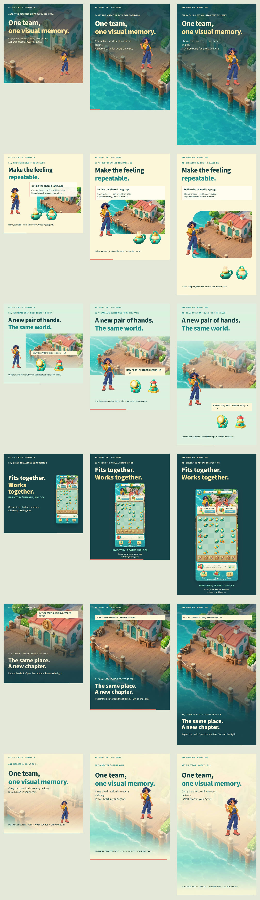

1 : 1
1080 × 1080 · 30 fps · 24 seconds
Download MP4 · Layout reportFrom characters and world building to merging lamps, fulfilling orders and restoring a harbor workshop. Finished artwork becomes a complete story, composed for square, portrait and vertical screens.
1080 × 1080 · 30 fps · 24 seconds
Download MP4 · Layout report1080 × 1440 · 30 fps · 24 seconds
Download MP4 · Layout report1080 × 1920 · 30 fps · 24 seconds
Download MP4 · Layout reportEach scene places its headings, characters, objects and interface to suit the frame. The game sequence uses the working UI source, with visible interface copy translated for the English edition.
Source and rebuildFilm verificationAsset provenanceTry the original prototype ↗
Original candidate artwork and UI from the published Art Director case. The prototype is a demonstration, not a shipped game or a claim of art-director approval.
Stills from the final MP4s. The three columns show 1:1, 3:4 and 9:16 compositions.
